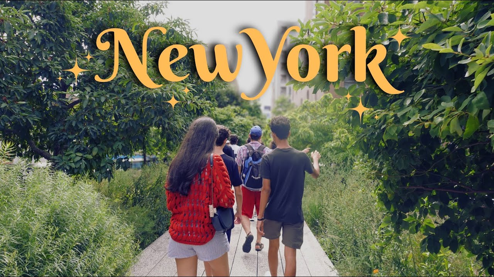
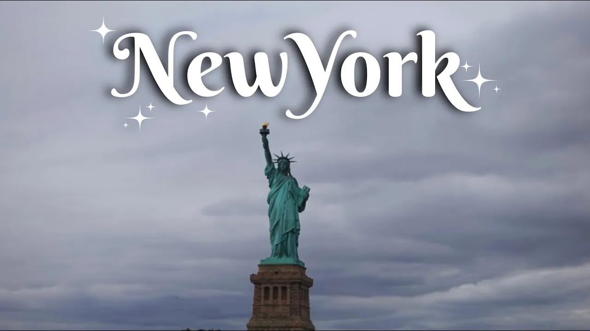
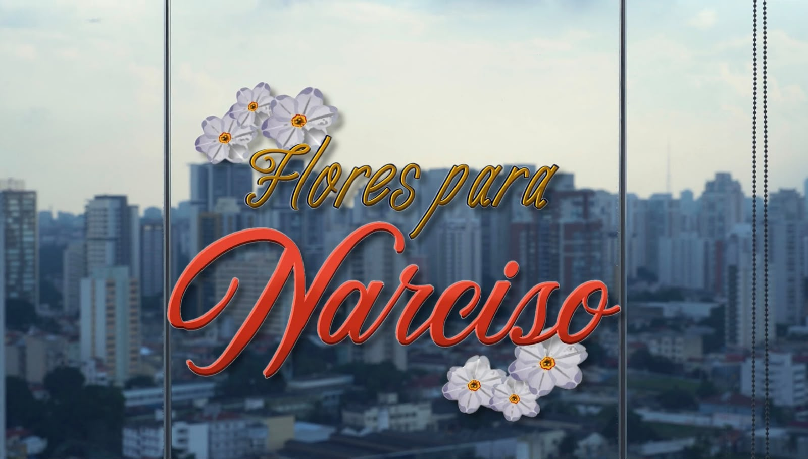
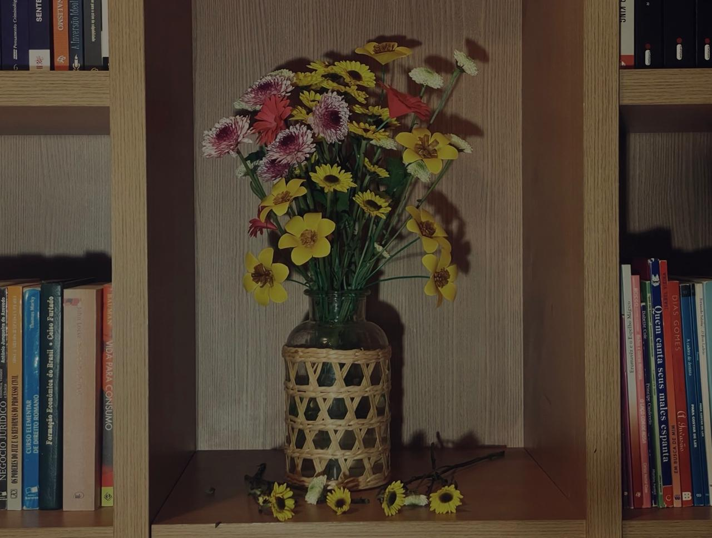

Projetos Selecionados

Documentário
Nova York — Mesquitas e Peixotos
Um dos longas produzidos quase inteiramente por mim, com a intenção principal de guardar memórias, mas que se transforma em um produto audiovisual que explora vivências, paleta de cores, som, fotografia, edição e cultura.

Documentário
Nova York — 2ª parte
Mais uma da série que mostra a história de duas famílias viajando por Nova Iorque. Extensão do primeiro produto, onde continuo na criação e pós, buscando narrativas e fotos para mesclar cultura e história de forma clara.



Projeto Acadêmico
Flores para Narciso
Um curta-metragem que traz uma interpretação contemporânea do conto Narciso.

Projeto Acadêmico
Beleza Morta
Uma videoarte em formato de Stop Motion que usa flores, sons e cores para fazer uma crítica à crise climática e ao desmatamento causados pelo ser humano.